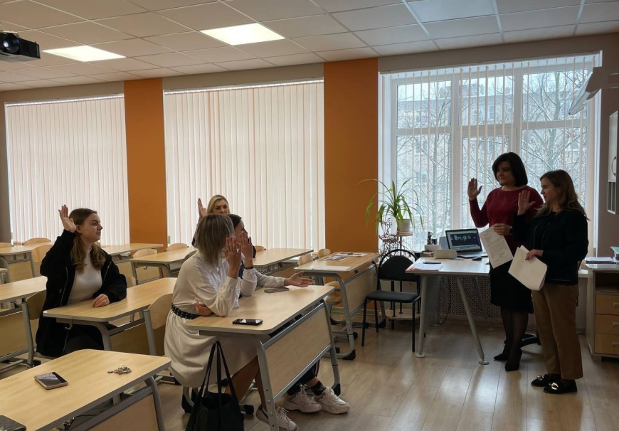
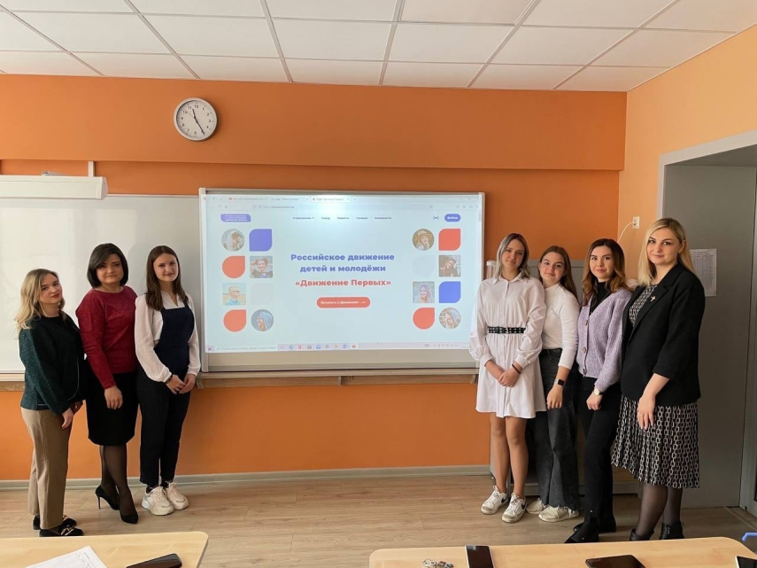
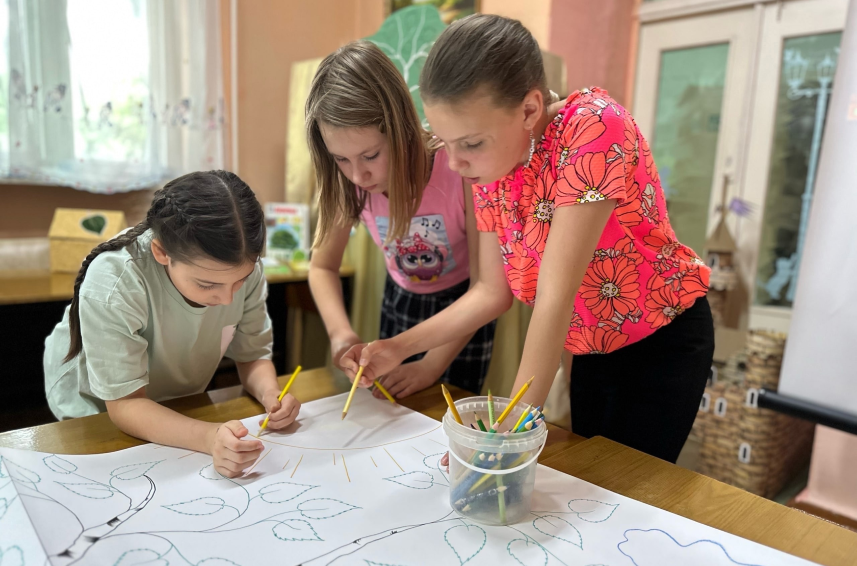
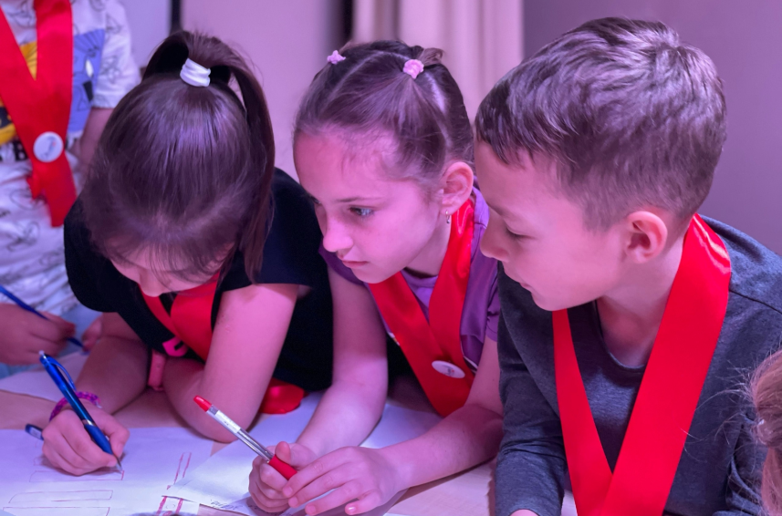
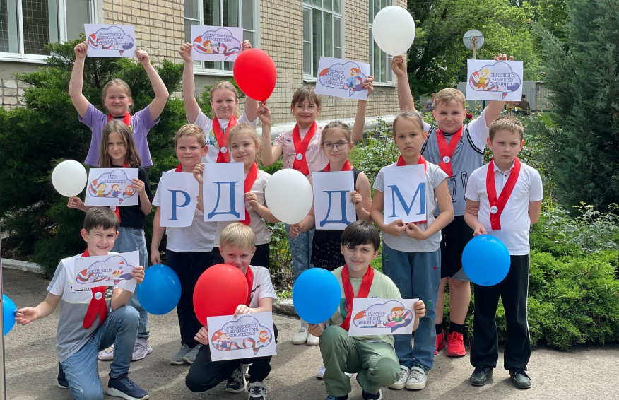
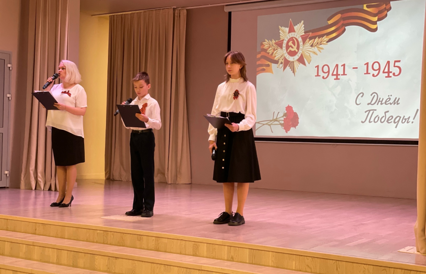
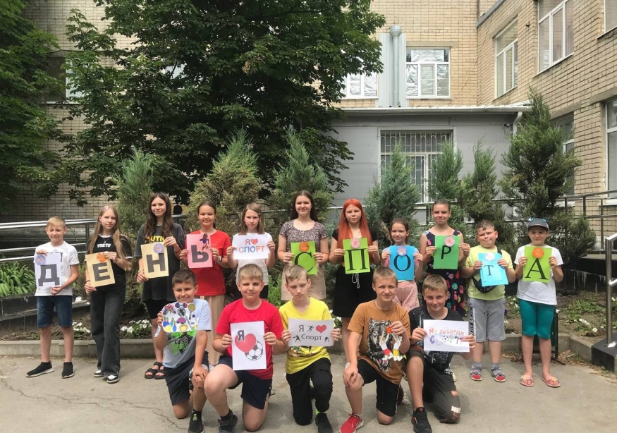
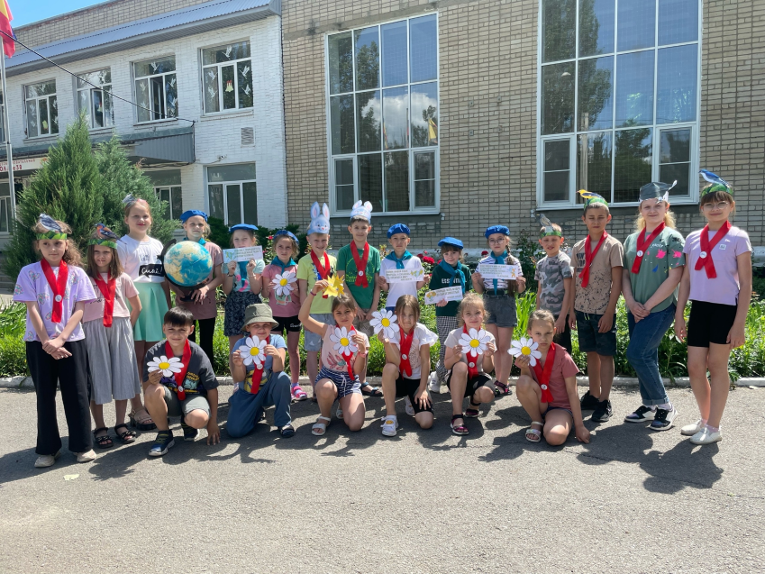

Направления движения
Образование и знания. «УЧИСЬ И ПОЗНАВАЙ!»

Время за гаджетами начнет приносить пользу.Мы познакомим участников с принципами создания видеоигр и других цифровых продуктов, расскажем, как работать с большими данными, создавать ботов, обучать нейросети, программировать беспилотники и моделировать полеты дронов.Для самых активных и результативных предусмотрены тематические смены, уникальные курсы наставничества по разработке цифровых продуктов и стажировка в одной из крупнейших отечественных IT-компаний.
Наука и технологии. «ДЕРЗАЙ И ОТКРЫВАЙ!»

Мир науки удивительный и захватывающий. Он выходит далеко за пределы школьной программы. «Движение Первых» поможет прикоснуться к науке и полюбить ее всем: от «начинающих» до уже «практикующих» ученых.
У каждого желающего будет возможность посетить экскурсии на технологичных производствах и прослушать курсы лекций от именитых ученых. А во время каникул на базе ведущих вузов страны мы проведем Университетские смены.
Наши научные проекты помогут воплотить и реализовать идеи участников или реализовать проведенные исследования, а также показать их другим – все это под руководством опытнейших наставников. Также у каждого желающего будет возможность посоревноваться в гонке коптеров, попробовать 3D-печать и погрузиться в мир VR.
Лучшие разработки будут представлены на юниорском дне Конгресса молодых ученых в центре «Сириус».
Труд, профессия и своё дело. «НАЙДИ ПРИЗВАНИЕ!»

Труд сопровождает нас на протяжении всей жизни, наши достижения и успехи – это все результаты труда. «Движение Первых» обеспечит участникам массу возможностей для учебы, развития и строительства своей профессиональной траектории, а также сформирует реестр вакансий для твоего первого трудоустройства.
Вместе с друзьями ребята примут участие в профессиональных пробах, пройдут стажировку в крупной компании и заработают свои первые деньги.
Бизнес-марафоны, финансовые турниры, встречи с успешными предпринимателями и участие в ключевых экономических форумах страны – эти и другие инструменты развития собственных навыков ждут будущих бизнесменов и знатоков финансовой грамотности.
Культура и искусство. «СОЗДАВАЙ И ВДОХНОВЛЯЙ!»

Для тех, кто мечтает о большой сцене или об участии в ТВ-шоу – наше направление «Создавай и вдохновляй». В рамках трека у участников будет возможность изучить основы музыкального мастерства, создать собственную песню, принять участие в авторском мюзикле, стать авторов сценариев, постановок и познакомиться с классическими и новыми формами театрального искусства.
А еще – побывать на театральных фестивалях, организовать уличное театральное шествие или принять участие со своим коллективом в гастролях – здесь каждый найдет формат по душе.
Волонтёрство и добровольчество. «БЛАГО ТВОРИ!»

Знаете, что объединяет все направления работы в Движении? Наш трек «Благо твори». Ведь те или иные волонтерские активности есть в рамках каждого из направлений.
Сейчас очень много людей, которые нуждаются в поддержке. И мы в Движении активно включаемся в большие волонтерские проекты и стараемся изменить мир к лучшему – творить добро. Оно может быть разным.
Восстановление объектов культурного наследия и помощь некоммерческим организациям в регионах России – одно из направлений волонтерства. И для того, чтобы оказать помощь в этой нелегкой задаче мы будем снимать и монтировать видеоконтент, разрабатывать дизайн афиш и баннеров, оформлять профили в социальных сетях.
Научное волонтерство – тоже к нам! Мы будем собирать данные и проводить наблюдения для будущих великих открытий наших ученых.
Патриотизм и историческая память. «СЛУЖИ ОТЕЧЕСТВУ!»

«Патриотизм и историческая память» – одно из важнейших направлений работы в Движении. Любить свою Родину, беречь историческую память и защищать Отечество – главные принципы нашего направления.
Участники смогут проверить свою ловкость и сноровку во Всероссийском военно-спортивном фестивале «Зарница», пройти все этапы от школы до уровня Всероссийского финала.
А еще узнать о памятных датах и событиях России, о деятельности нашего направления от опытных экспертов и наставников, взять шефство над «Вечными огнями» и другими военными памятниками и получить паспорт в торжественной обстановке из рук общественного деятеля в сфере патриотического воспитания.
Старшие участники смогут включиться в деятельность по сохранению правды о преступлениях против советского народа в годы Великой Отечественной войны – проекта «Без срока давности».
Спорт. «ДОСТИГАЙ И ПОБЕЖДАЙ!»

Для тех, кто любит постоянно быть в Движении, стремится быть сильным, смелым, побеждать в российских и международных соревнованиях – наш трек «Достигай и побеждай».
Спортивные квесты и челленджи на улицах города и за его пределами от Движения и спортивных Федераций: на велосипедах, самокатах, лыжах, пешком, с геотрекером и увлекательными заданиями - это тренировка и игра одновременно.
А для тех, кто дойдет до финала – участие в заезде или забеге в одной команде со звездами спорта. Но и это еще не все – участников ждут спортивные марафоны на ловкость, силу и выносливость, а еще мастер-классы, совместные тренировки и зарядки с сильнейшими спортсменами России.
Здоровый образ жизни. «БУДЬ ЗДОРОВ!»
Каждый мечтает быть энергичным, сильным, здоровым и дожить до ста лет. В нашем направлении «Будь здоров» у участников появится возможность открыть секреты правильного питания и эффективного сна, организовать настоящий фитнес-клуб в школе и поближе познакомиться с понятием «цифровая гигиена».
Наши эксперты познакомят ребят с основами доврачебной помощи, научат ориентироваться на местности и быть готовыми всегда и в любой ситуации прийти на помощь к ближнему.
Здоровый образ жизни — это тренд «Движения Первых»!
Медиа и коммуникации. «РАССКАЖИ О ГЛАВНОМ!»
Мы живем в динамичном информационном мире, где профессия журналиста и коммуникатора как никогда востребована. В нашем направлении «Расскажи о главном» у участников появится возможность вместе с командой освещать события Движения на разных уровнях, предлагать идеи для социальных сетей, СМИ и онлайн-шоу.
Авторы самых интересных идей побывают в ведущих информационных агентствах России, на федеральных телеканалах и радиостанциях. Счастливчики примут участие в мастер-классах, тренингах и лекциях от лучших экспертов в сфере журналистики, блогинга, фотографии и видео.
Участники направления получат пресс-карту и в качестве корреспондента поработают на федеральных мероприятиях, а у некоторых появится возможность опубликовать свои статьи в бортовых журналах ведущих перевозчиков страны.
Дипломатия и международные отношения «Умей дружить!»
У каждого из нас есть своё понимание о том, что такое дружба .Настоящий друг — это большое богатство! Он верный, преданный, на него всегда можно положиться. Настоящий друг — это родной тебе человек, он всегда окажет тебе помощь и не будет ждать ничего взамен.Очень важно ценить дружбу и уважать интересы друг друга. Умение коммуницировать и общаться с самыми разными людьми — важные навыки любого человека.
Экология и охрана природы. «БЕРЕГИ ПЛАНЕТУ!»
Всем важно, как выглядит мир вокруг нас. И в направлении «Береги планету» каждый участник Движения сможет на это повлиять.
Мы создадим экологические отряды и проведем экологические мероприятия: квест-игры, уроки и викторины, ярмарки по обмену вещами и растениями, зеленые марафоны и плоггинги, займемся посадкой деревьев и помощью животным.
Наш трек – это возможность перейти на зеленую сторону и поменять мир вокруг уже сейчас. Мы объединимся, чтобы взять под опеку редких животных и помочь четвероногим друзьям в приютах: собрать для них помощь и создать новые лежанки из старых ненужных вещей.
Вместе мы создадим и восстановим экотропы в регионах, а самых активных исследователей отправим в научно-практические экспедиции, чтобы расширить знания и познакомить с природой ближе.
Туризм и путешествия. «ОТКРЫВАЙ СТРАНУ!»

Настало время приключений, путешествий и походов!
С нами каждый участник направления «Открывай страну» сможет по-новому открыть свой родной город. Но не за компьютером или в библиотеке, а в формате городской игры, проходя маршруты, отгадывая загадки и собирая артефакты.
Не обойдётся и без гостевых визитов, поисковых экспедиций и археологических раскопок.
С нами участники Движения научаться самостоятельно разрабатывать большие межрегиональные туристические маршруты, смогут отправиться в гости к друзьям из других регионов, увидеть древние крепости и принять участие в настоящей реконструкции сражения не только в фильмах, но и наяву.
А еще в каждом городе мы определим места, где по-настоящему комфортно детям и молодежи, и где мы будем регулярно проводить наши встречи, вместе создадим почтовую марку «Движения Первых» и почтовые открытки, которые можно будет отправить друзьям из каждого города, а еще создадим музеи Движения в каждом первичном отделении.